Nu är det grönt för skogsägare att låta träden växa tio år till

Det är absolut nödvändigt att skogsägare är trygga och ges en ekonomisk möjlighet att låta träd växa tio år till. Med skogserbjudandet EKEN PLUS10 är det för första gången möjligt. I uppstarten av samarbetet betalar vi ut drygt marknadsvärdet för avverkningen och erbjuder en trygghetslösning som minimerar risk. Vi stöttar även forskning och utveckling som underlättar för skogsägare att på lång sikt kunna ställa om till framtidens lönsamma och klimatsmarta skogsbruk.